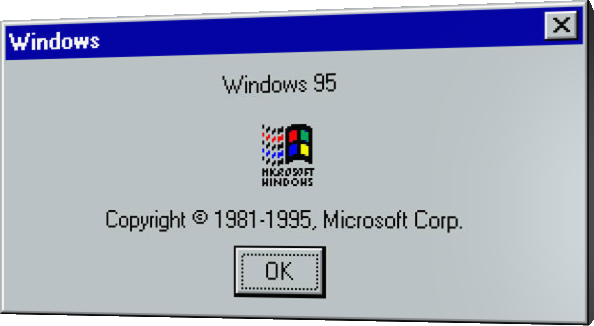

—ing, it's your move.
I've made up my mind.
Time is running out, make a move.
Oh, we can go on.
Do you understand?
It's all in your hands.
It's your-
Embrace the era of yesteryear.
CRT monitors, pixelated landscapes, and the soothing hum of dial-up connections.

Background Image by Freepik
Explore the future.
Revolutionize computing with [REDACTED] 95.
Step into the Web of the Future.
Reject modernity, embrace the old days.
Explore the vast Internet, this is the future.
Go back to how things were.
Return to a more simpler time, when the future was now.